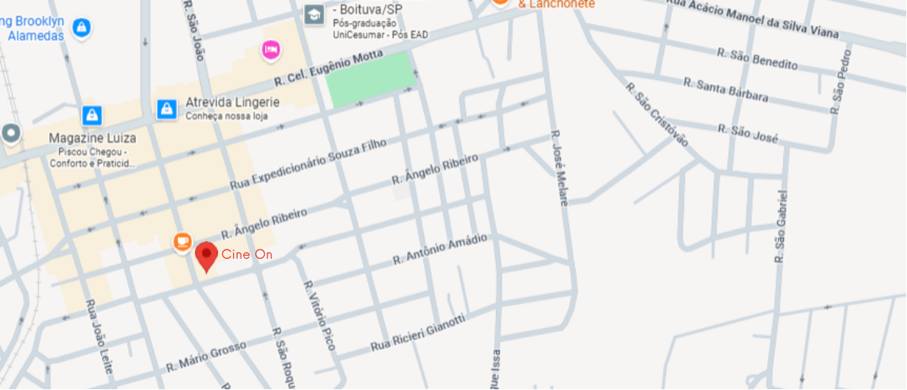

Sobre a CineOn
A CineOn é uma plataforma desenvolvida para apresentar informações sobre filmes, trailers, estreias e curiosidades do universo cinematográfico.
O projeto foi criado como atividade acadêmica com o objetivo de aplicar conhecimentos de HTML, CSS e JavaScript na construção de um site moderno e interativo.
Nossa Missão
Proporcionar aos amantes do cinema uma experiência simples, organizada e agradável para descobrir novos filmes e acompanhar os principais lançamentos.
O que você encontra na CineOn?
- 🎬 Filmes em destaque
- 🏆 Vencedores do Oscar
- 🍿 Bomboniere virtual
- 📅 Próximos lançamentos
- 📞 Formulário de contato
📍 Nossa Localização

Nossa sede está localizada no centro da cidade, oferecendo conforto e tecnologia para todos os apaixonados por cinema.